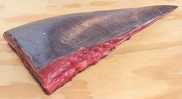
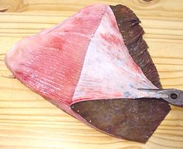
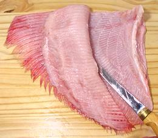
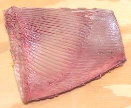
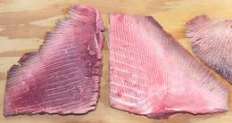
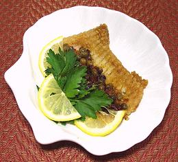

Skates and Rays are members of the shark family that have pectoral fins so exaggerated they are called "wings". This allows them to lie flat on the ocean floor and disappear into the sand. They eat mainly crustaceans and other invertebrates they find on the ocean floor, but occasionally take small fish. While most people in North America never encounter skate on their dinner plate, it is served in areas like New England that have a strong fishing and seafood tradition, is popular in France, and in the Indo-West Pacific region. The photo specimen, a whole Skate Wing, was 14 inches from tip to base and weighed 4.6 pounds.
More on Skates and Rays
|






|
Skate Wingflesh is quite mild, but, like shark, has a lot of connective tissue in it, while bony fish have almost none. The texture is firm, and the flavor, again like shark, is between pork and fish. Unlike shark, it is in the form of a lot of narrow strips. Skate Wing cooks very quickly and if overcooked breaks up along the corrugations into separate strands.Stingray Wingis the same a Skate Wing (though they evolved from sharks separately) but may Skates are rather small, especially those caught as bicatch in Southeast Asia. Small wings can be cooked whole, after skinning, My experience with the wing tips of Skate suggest it is still better to fillet them, because the cartilage strands become fragile and break up as you try to scrape the flesh off of them. Unfortunately, I can't get any of these Stingrays here in Southern California to experiment with.Buying:Skate wing is fairly common in the larger Asian markets here in Southern California, and may be found near fishing ports in other regions of North America. Skates are generally by-catch when fishing for other kinds of fish.Skate wing is generally sold in triangles weighting from 1 to 2 pounds. These triangles are half a wing, so there would be four from a skate - but I've also found them as whole wings. The 4.6 pound photo specimen at the top of this page was purchased from a large Asian market in Los Angeles (San Gabriel) for 2019 US $2.49 / pound. The #1 key to successful skate wing cooking is for the wings to be very fresh. Since they're cut from the skate you don't have the usual methods to judge fish freshness, but smell will always tell. If it smells like household ammonia it is not fresh and should be rejected. If the smell is faint, you may be able to refresh the meat (see below). Storing:Because freshness is a big issue, you want to keep skate wings as cold as possible and use them as soon as possible - like immediately. If you must hold them, skin and fillet them and freeze the fillets.Refresh:Skate wings that smell of ammonia will taste like ammonia. If the smell is strong, toss them out or suffer the consequences - it won't taste good and the dead fish odor may hang around for days. If you've got wings with just a hint of ammonia smell you can refresh them. Skin them, fillet them and prepare them ready to cook, then soak the pieces in strongly acidulated cold water for half an hour. Preferably acidulate with citric acid (1 T to 2 quarts water). Ammonia is alkaline and will be neutralized by the acid. The pieces of skate should now have a light fish smell and be much more edible.Yield:Exact yield depends a little on how the wing was cut. The photo specimen was cut with a ridge of cartilage at the root, so one cut without that ridge would yield a little more. The photo specimen (photo at top of page) weighed 4.59 pounds. The main wing yielded 2.7 pounds 11 ounces, with another 9 ounces cut from the base of the wing. The yield was 71%.SkinningSkate skin must be removed. It's basically shark skin and shark skin is gritty with scales that are built more like teeth than like regular fish scales. They don't scrape off. Male skates may also have some sharp spines out on the wings. There are several ways to go about this. "Easy Peel" Skates:Some Skate Wings are easy to skin. Usually, you have them cut tip to base as half wings, so you have a nice sharp point to start pealing from.
Not so "Easy Peel:I've found, by buying some, and reading on-line pages, that some skates don't skin nicely and cleanly like the photo to the left. A thin skin pulls off, but leaves a white layer of connective tissue (silver skin) over the meat rather than pulling it off. Experienced chefs say this should be removed, but this layer is rather difficult to remove once the skin is pulled.You can skin this kind of Skate wings with a fillet knife, but it take more skill and patience than the ones described above.
Skinning the Easy Way:
Filleting:Skinned by whatever method you use, you will now be able to filet the thick side from the cartilage layer quite easily, and with practically no flesh left behind. Keep your filleting knife at a very shallow angle to avoid cutting into the cartilage, which is quite soft. Note: not all recipes require filleting. Skate may be grilled with the fin rays in, and for some recipes you flake the meat off the rays after poaching.Depending on the species of skate and size of your wing, the thin side may have enough flesh to be useful and can be filleted just like the thick side. In some cases, you may run out of flesh about 2/3 the way across so the fillet will be smaller and a lot thinner than from the thick side. Stock:The cartilage structure and offcuts, simmered for a few hours (unlike regular fish stock which should be no more than 40 minutes) makes a fairly mild stock with no oil whatever. Let it settle a while before decanting. This should work well blended with other fish stocks.Cooking Skate WingsMost recipes for skate call for it to be pan fried, though some call for poaching. In either case, keep in mind that the skate filet is not only thin but it's deeply grooved, which allows fast heat penetration. Take care not to overcook, particularly when poaching, or your fillet may fall apart on the corrugations. The photo shows a filet pan fried without batter. For this dish, very popular in France, see our recipe Skate Wing with Capers. You can grill skate wings leaving the fin rays in and serve it that way. Use a rub or sauce suitable for grilled fish. Hearty eaters may eat it rays and all (depending on size), though the finicky may flake the meat off. Note that you'll want to serve skate wings corrugated side up (the
skin side), so you'll want to fry that side first. When you turn the
fillet over with the cut side down it will curl some toward that side.
This will tend to emphasize the corrugations.
|